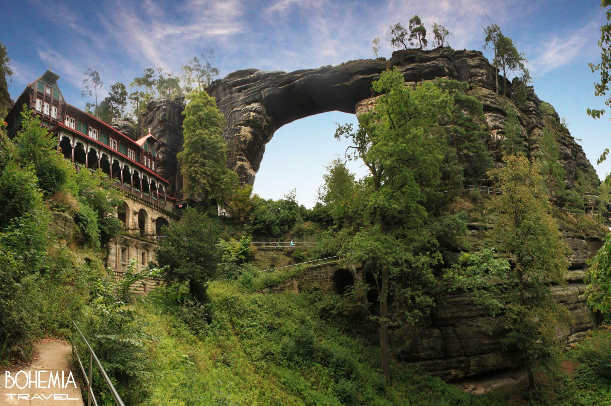

Voorbeeld 15
>
home
praag
home

home
Tsjechie is een land in centraal europa. Het land grenst in het westen en noordwesten aan Duitsland, in het noorden aan Polen,
op deze website kunt u iets te weten komen over tjechie en wat u kunt doen in tjechie